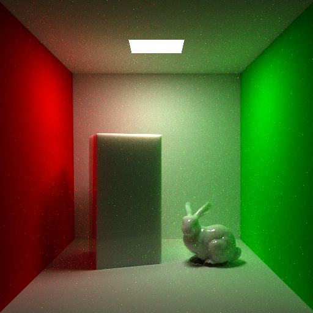

pbbastian.github.io
This page contains results of projects from various courses I've attended at DTU. Contact me if you're interested in the source code or more renderings :) Also do check out the WebGL stuff available at http://www.student.dtu.dk/~s070808/02561/02561.html.
Contents:
02941 Physically Based Rendering
Building on the course 02562 Rendering, this course introduces a wide variety of concepts from the world of physically based rendering. Most concepts were implemented in a path-tracer, while some were also implemented in a photon mapping renderer. I've extracted the nicer renders, but you're welcome to check out the whole report.
Microfacet models
The Torrence-Sparrow model using the Blinn microfacet distribution implemented in a path-tracer. Furthermore support for complex indices of refraction were implemented, giving the proper gold color.
Reflection, refraction and caustics
Sub-surface and volumetric rendering
We implemented sub-surface scattering and used it to make a marble material.
We also implemented volumetric rendering. The image below should also be marble, despite the clearly visible differences to the image above. This stems from the fact that the above method is "merely" an approximation, while volumetric rendering is more physically correct. The downside is absolutely terrible render times, although much work could be done to improve that.
02564 Real-time graphics
In this course we implemented a number of real-time effects in C++ and GLSL.
Alchemy Ambient Occlusion
The cow is there because it is the cursor for our voxel world in which this was implemented, that is, it marks where the changes to the terrain will happen.

Procedurally generated voxel world
Toon shading

Shadow mapping
Procedurally generated tree

Single-pass wireframe shader

02562 Rendering
In this course we implement a variety of ray-tracing techniques using C++.
Ambient occlusion
Unfortunately not the most optimal scene for this, but due to time restrictions we were not able to get it working with arbitrary scenes.

Photon mapping

Absorption